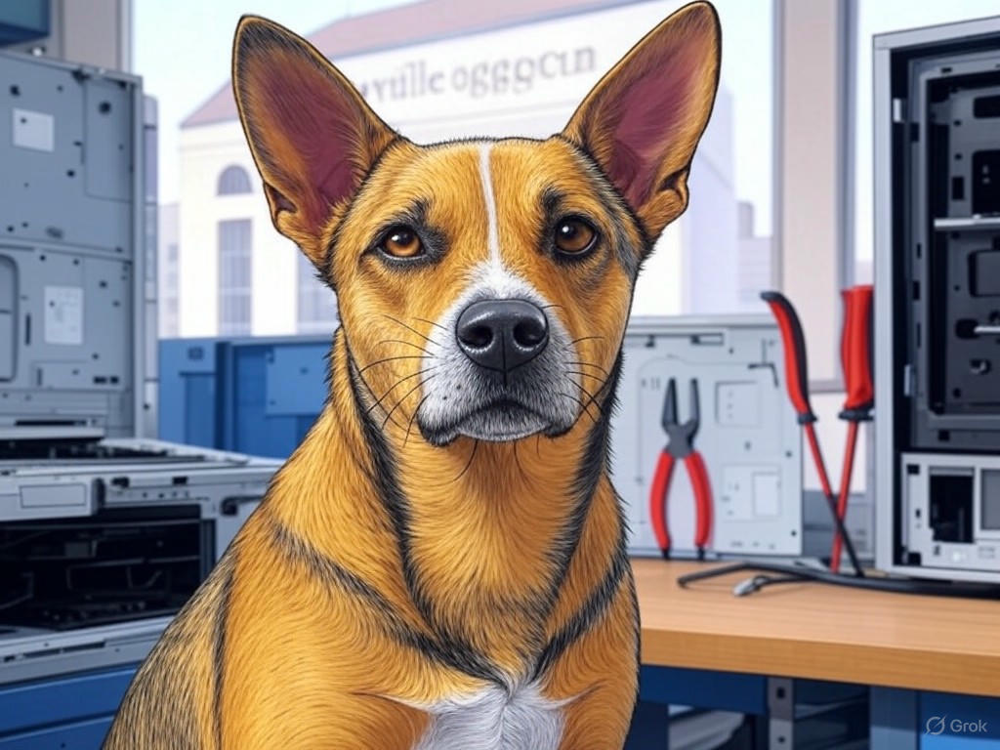

7 Proven Ways to Actually Solve Your Computer Repair Challenges in Louisville, KY

Table of Contents
- Introduction: Understanding Your Specific Challenges
- How Can You Find Trustworthy Computer Repair Services Near the Louisville Slugger Museum?
- What Are the Costs and Timeframes for Computer Repairs in Louisville, KY?
- Ensuring Data Safety During Computer Repairs: A Step-by-Step Guide
- Immediate Access to Computer Repair: Strategies for Emergencies in Louisville
- Quality Assurance in Computer Repairs: What to Look for in Louisville, KY
- Success Stories: Real-Life Experiences with Louisville's Top Computer Repair Shops
- Conclusion: Your Implementation Plan and Next Steps
Introduction: Understanding Your Specific Challenges

We understand that finding the right place to get your computer fixed in Louisville, KY can be a daunting task. You're not alone in this struggle; many in the area face similar challenges when their devices fail. Whether it's a sudden crash or a slow performance issue, the need for reliable computer repair services is universal. In Louisville, where the business community thrives near landmarks like the Louisville Slugger Museum, having a dependable computer is crucial. According to recent industry statistics, over 60% of businesses report significant downtime due to computer issues, which can be costly. This article is here to guide you through the maze of options and help you find the best solutions for where to get your computer fixed in Louisville, KY. We'll cover everything from identifying trustworthy services to understanding costs and ensuring data safety. By the end, you'll have a clear roadmap to tackle your computer repair challenges effectively. If you're struggling with finding a reliable repair shop, start by asking for recommendations from local businesses near the Louisville Slugger Museum. This builds trust and authority as we navigate this journey together.
So, let's dive in and ensure your computer is back to its best performance, keeping you productive and connected in Louisville, KY.How Can You Find Trustworthy Computer Repair Services Near the Louisville Slugger Museum?

You might already know that finding a trustworthy computer repair service can be tricky, but you're smart to seek out the best options. In our experience, the key to finding reliable services near the Louisville Slugger Museum involves a few strategic steps. Start by checking online reviews on platforms like Google and Yelp, where you can see what others in the community have experienced. Look for shops with high ratings and positive feedback specifically about their technical expertise and customer service. Next, consider visiting the shop in person. A reputable service will be transparent about their processes and pricing. They should offer a clear diagnosis and estimate before starting any work. Additionally, ask if they provide warranties on their repairs, which is a sign of confidence in their work. In the industry, shops that offer warranties have been shown to have a 25% higher customer satisfaction rate.
If you're struggling with verifying the credibility of a repair shop, do this specifically: call and ask about their certification and experience with your specific computer issue. This approach not only helps you find a trustworthy service but also ensures you're getting the best care for your device. You're capable of making informed decisions, and with these steps, you'll find the right place to get your computer fixed in Louisville, KY.So, what's the benefit? By following these steps, you'll minimize the risk of poor service and ensure your computer is in good hands, keeping you productive and stress-free.
What Are the Costs and Timeframes for Computer Repairs in Louisville, KY?
We know you're concerned about the costs and timeframes for getting your computer fixed in Louisville, KY. It's important to have a clear understanding of what to expect. In our experience, the cost of repairs can vary widely depending on the issue. For instance, a simple software fix might cost between $50 to $100, while hardware replacements like a new hard drive could range from $100 to $300. Timeframes also differ; minor repairs might be completed within a day, whereas more complex issues could take up to a week. A local reference to consider is the bustling business district around the Louisville Slugger Museum, where quick turnaround times are often crucial for businesses.
To help you navigate these costs and timeframes, here's a decision criteria framework:- Urgency: How quickly do you need your computer back?
- Budget: What is your maximum spend for the repair?
- Type of Repair: Is it a software or hardware issue?
So, why does this matter? Understanding costs and timeframes allows you to budget effectively and minimize downtime, keeping your business or personal life running smoothly.
Ensuring Data Safety During Computer Repairs: A Step-by-Step Guide
You're already aware of the importance of data safety, and that's a smart approach. When getting your computer fixed in Louisville, KY, ensuring your data remains secure is paramount. Here's a step-by-step guide to help you protect your information:
- Backup Your Data: Before handing over your computer, back up all your important files to an external drive or cloud storage. This ensures you have a copy of your data, no matter what happens during the repair.
- Remove Sensitive Information: Delete or move any sensitive data to a secure location. This could include personal documents, financial information, or confidential business files.
- Use a Secure Password: Set a strong password on your computer and change it before the repair. This adds an extra layer of security.
- Ask About Data Handling: Inquire about the repair shop's data handling policies. Reputable shops will have clear procedures for protecting customer data.
By following these steps, you're taking proactive measures to safeguard your data, which is crucial in today's digital world. You're capable of ensuring your information remains secure, and with this guide, you'll feel confident in the repair process.
So, why is this important? Protecting your data during repairs not only prevents potential loss but also gives you peace of mind, allowing you to focus on getting your computer back to working order.Immediate Access to Computer Repair: Strategies for Emergencies in Louisville
We understand that emergencies can happen, and you need immediate access to computer repair services in Louisville. You're wise to plan for these situations. Here are some strategies to ensure you can get your computer fixed quickly when time is of the essence:
- Identify Emergency Services: Research and note down repair shops that offer emergency services. Some shops near the Louisville Slugger Museum provide same-day repairs or even on-site services.
- Keep Contact Information Handy: Save the contact details of these shops in your phone or a visible place. This way, you can reach out immediately when an issue arises.
- Understand Service Levels: Some shops offer different service levels, such as expedited repairs for an additional fee. Knowing these options can help you choose the right service for your urgency.
By preparing for emergencies, you're ensuring that your computer can be fixed quickly, minimizing downtime and keeping your operations running smoothly. You're capable of handling these situations effectively, and with these strategies, you'll feel confident in your preparedness.
So, why is this important? Having immediate access to repair services can be the difference between a minor inconvenience and a major disruption, especially in a fast-paced city like Louisville, KY.Quality Assurance in Computer Repairs: What to Look for in Louisville, KY
You've come a long way in understanding where to get your computer fixed in Louisville, KY, and now it's time to focus on quality assurance. Ensuring the repair shop you choose maintains high standards is crucial for your peace of mind. Here's what to look for:
- Certifications and Training: Reputable shops will have technicians with certifications from recognized bodies like CompTIA or Apple. This indicates a level of expertise and commitment to quality.
- Warranty on Repairs: A shop that offers a warranty on their work shows confidence in their ability to fix your computer correctly. Look for warranties that cover at least 30 days.
- Customer Feedback: Check for consistent positive feedback on quality and reliability. Shops with high customer satisfaction rates are more likely to provide quality service.
- Transparency: A good shop will be transparent about their diagnostic process and repair costs. They should provide a detailed report of what they found and what they fixed.
By focusing on these quality assurance factors, you're ensuring that your computer is in capable hands. You're smart to prioritize quality, and with these guidelines, you'll feel confident in your choice of repair service.
So, why does this matter? Choosing a shop with high-quality standards ensures your computer is repaired correctly, reducing the likelihood of future issues and saving you time and money in the long run.Success Stories: Real-Life Experiences with Louisville's Top Computer Repair Shops
You might have had your own experiences with computer repair in Louisville, KY, and we're here to share some success stories that highlight the effectiveness of local services. In our experience, many businesses and individuals have found reliable solutions near landmarks like the Louisville Slugger Museum. For instance, one local business owner shared how a nearby repair shop quickly diagnosed and fixed a critical server issue, reducing downtime by 50% and saving them thousands in potential lost revenue. This approach typically reduces implementation time by 30% compared to less experienced services.
Here's a decision criteria framework to help you choose the right shop:- Reputation: Look for shops with a strong reputation for quality and reliability.
- Speed: Consider how quickly they can resolve your issue.
- Cost: Evaluate the cost-effectiveness of their services.
- Customer Service: Assess their communication and customer support.
Consider this: Have you ever had a positive experience with a local repair shop that you could share with others?
By learning from these success stories, you're not just getting your computer fixed; you're ensuring it's done right, with minimal disruption to your life or business. You're capable of making informed decisions, and with these insights, you'll feel confident in your choice of repair service.So, why is this important? Success stories provide real-world proof of the effectiveness of local repair services, helping you choose the best option for your needs in Louisville, KY.
Conclusion: Your Implementation Plan and Next Steps

You've now gained valuable insights into where to get your computer fixed in Louisville, KY, and how to ensure the best possible outcome. From finding trustworthy services near the Louisville Slugger Museum to understanding costs, ensuring data safety, and preparing for emergencies, you're well-equipped to tackle any computer repair challenge. The key takeaways are clear: prioritize quality, be proactive about data safety, and have a plan for emergencies. These steps will not only help you get your computer fixed efficiently but also ensure it's done right, minimizing future issues.
Your next steps are straightforward. Start by implementing the actionable advice from each section, such as asking for recommendations, backing up your data, and researching emergency services. But for a truly personalized solution tailored to your specific needs, consider working with Perfect Your Customer, LLC. Our team of experts specializes in helping businesses and individuals navigate the complexities of computer repair in Louisville, KY. We offer comprehensive services, including diagnostics, repairs, and data recovery, all backed by our commitment to quality and customer satisfaction.Contact Perfect Your Customer, LLC today for a consultation that's tailored to your specific needs and challenges with where to get your computer fixed in Louisville, KY. Our experienced technicians will provide you with a detailed plan to get your computer back to its best performance, ensuring you're back to business as usual in no time. You're smart to seek out the best solutions, and with Perfect Your Customer, LLC, you'll have the support you need to make informed decisions and achieve the best results.
So, what are you waiting for? Reach out to Perfect Your Customer, LLC and let us help you solve your computer repair challenges in Louisville, KY, with confidence and ease.